AutoData：数据结构、代码框架与版本区别
非实验机制说明合并为 5 页；保留 34 页问题、方法、实验与结论，共 39 页。实验页直接取自 v015，原图及页注不改写。PDF 保留页脚中的原页码，页内引用也指 v015 原页码；本网页同时标出新旧位置。
下载完整 PDF · 代码证据 · 接口证据
阅读顺序 01 / 39 · v015 原第 1 页先分清保存优化和规划迁移两个问题
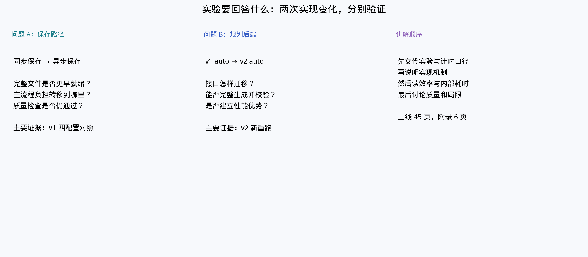
怎么做的
实验沿两条路线展开：先保留 cuRobo v1 规划与仿真任务，比较同步保存和异步保存；再在异步保存基础上接入 cuRobo v2。每轮记录整批文件最终就绪时间，并检查保存数据的结构和任务末态。
这样做的意义
生成数据既要快，也要可用。把保存改造与规划迁移分别比较，才能判断收益主要来自减少生成阻塞，还是来自规划方法变化；同时避免用保存条数掩盖任务质量变化。
当前结论
已有结果支持 v1 异步保存改善本任务的生产效率。v2 已完成接口接入与整轮运行，但现有结果没有建立其效率和质量优势。后文先解释改动机制，再用运行记录检验。
读图与术语
episode 指一次任务尝试；writer 指压缩、写文件的 CPU 子进程；规划后端负责从目标求出机器人运动轨迹。
阅读顺序 02 / 39 · v015 原第 2 页哪些实验可以直接比较
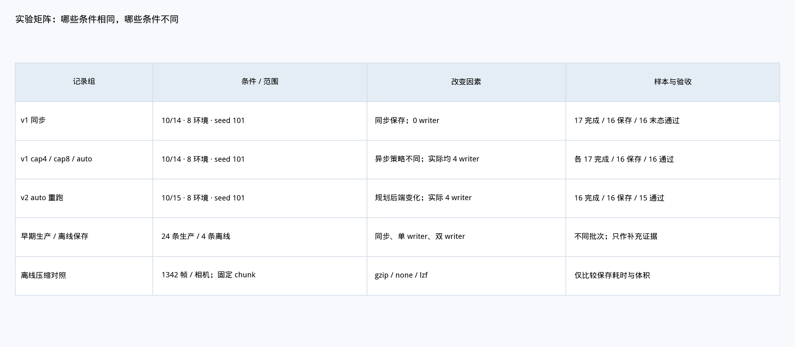
怎么做的
历史主实验使用 8 个仿真环境、seed 101，每组目标保存 16 条，比较 v1 同步、cap4、cap8 和 auto。v2 auto 在次日运行；新增内部计时使用独立的 4 环境、8 条目标配对，放在第 29–36 页。
这样做的意义
环境数、保存目标、日期和计时插桩都会影响运行时间。先列出共同条件和改变因素，才能确定每个百分比对应哪一组比较，避免把不同规模的实验拼成一个平均值。
当前结论
历史 v1 四组能用于观察同一任务下保存方式的变化；v2 跨日期比较只能描述这次运行。各历史配置只有一轮，细小名次差异没有重复试验支持；4 环境配对提供独立的内部耗时证据。
读图与术语
cap 是允许启动的 writer 数量上限，不等于实际进程数。本轮 cap4 与 cap8 都只启动了 4 个 writer。
阅读顺序 03 / 39 · v015 原第 3 页时间从哪里开始算，吞吐如何计算

怎么做的
最终就绪时间 T 从第一条 episode 开始计到 output_ready：后台任务已排空、分片已合并、最终输出可用。记录成功吞吐等于保存条数×60/T；末态合格吞吐则将分子换成严格检查通过的条数。
这样做的意义
异步提交可以很快返回，但最终文件可能仍在写入。把终点固定在输出可用时，才能公平比较同步与异步；再用质量通过数作分子，才能回答每分钟真正获得多少合格数据。
当前结论
整批墙钟时间适合衡量生产效率；每个 episode 的阶段均值适合解释等待发生在哪里。多个环境的计时区间会重叠，不能将这些均值或后台写入耗时相加来还原整批时间。
读图与术语
墙钟时间就是现实经过的时间。launcher_seconds 另包含首条任务开始前的启动成本，与本图 T 的起点不同。
阅读顺序 04 / 39 · 精简机制说明数据结构：一条 episode，三种表示
同一次任务的数据，依次成为录制缓冲、跨进程保存任务和 HDF5 记录。
录制缓冲｜按环境、按字段、按时间保存
RecorderManager 为每个环境持有 EpisodeData。其 data 是嵌套字典；逐步录制的叶子是帧列表。字段路径保留层级，列表堆叠后形状为 [T, …]；T 是该字段的采样数。具体字段由 recorder 配置决定。
保存任务｜数据本体与描述信息分开
数据本体放在 CPU 共享内存。任务携带 memory 名称及 leaves；每个 leaf 用 path、shape、dtype、offset、bytes 定位一个数组。另带 route、demo_id、env_args 和 attributes，决定写到哪里、附带什么元数据。
文件记录｜保留字段树，按 demo 组织
writer 将各字段写入 /data/demo_<id>/<字段路径>，seed、success、num_samples 等放在属性中。共享内存中的字段路径对应 HDF5 层级；图像和状态数组不作为大对象经进程队列传递。
贯穿示例｜结构示意，非完整数据清单
某字段：data[字段] = [帧0, 帧1, …] → leaf(shape=[T,…], dtype, offset) + 共享内存 → /data/demo_7/字段。env_id 用于运行时定位环境；demo_id 用于保存记录，二者不是同一个编号。
依据：code-structure-evidence.md：EpisodeData、layout、pack、write_job阅读顺序 05 / 39 · 精简机制说明代码框架：生成主进程 + CPU 保存进程
AutoData 负责产生轨迹；本地扩展负责把完成的 episode 交给后台保存。
生成主进程｜规划、步进、录制
任务协程调用规划适配器，提交动作；env_loop 汇集动作后执行 env.step。RecorderManager 收集每个环境的数据。多环境共用生成主进程，并非每个环境一个操作系统进程。
保存入口｜Bridge → ExportPool
Bridge 保留导出路由、成功标记和 demo ID 语义。ExportPool 管预算、共享内存、任务队列、writer 和回执；主进程仍承担数据打包，预算不足时等待。
后台执行｜writer → 独立 HDF5 分片
spawn 创建 CPU writer。每个 writer 从队列取任务、映射共享内存、压缩并写自己的分片；不接收仿真对象，也不运行 CUDA 规划。最终由主进程排空、检查并合并。
接入位置｜启动器安装，运行时回收
generate.py/build_source 在环境创建前 configure，创建后 attach；compat.py 在生成过程中 poll，结束时 finish。录制类方法与 recorder 实例导出方法在运行时接入；上游文件不因此被永久改写。
依据：code-structure-evidence.md：generate.py、compat.py、Bridge、ExportPool；interface-evidence.md：env_loop阅读顺序 06 / 39 · 精简机制说明异步保存的本质：移交所有权，延后等待
提交返回、分片写完、最终文件就绪，是三个不同的完成时刻。
① 录制 → 打包｜主进程仍有工作
CPU 帧按环境独立持有，避免切片拖住整批存储。提交前检查在途字节预算，再复制到共享内存；CPU 列表逐帧复制并释放源帧，小型 GPU 状态先堆叠再转到 CPU。这里仍有复制成本。
② 提交 → saved｜后台写入与生成重叠
jobs 队列传任务描述，writer 压缩、写分片并 flush，再通过 results 返回 saved。主进程收到回执后才释放对应共享内存并更新保存计数；pending 包括排队与写入中的任务。
③ finish → output_ready｜整批真正完成
finish 排空任务，等待 writer 退出并核对结果，再合并分片。launcher 关闭环境后记录 output_ready。writer 的失败、退出或超时会向主进程报错，不能把已提交数当作已保存数。
为什么能提速｜保存成本与下一条生成重叠
原同步路径必须写完才能返回；异步路径打包提交后可继续生成。预算等待、压缩写盘和最终合并仍然存在。数据布局与所有权改动支持这条流水线，尚未单独测出各自收益。
依据：code-structure-evidence.md：owned_recording_method、submit、poll、finish、_merge阅读顺序 07 / 39 · 精简机制说明版本区别：一次改保存，一次换规划接口
这里的三版是项目测试实现；v015 / v017 则是报告修订号。
v1 同步基线｜MotionGen + 主流程保存
使用 cuRobo v1 规划；recorder 在主流程堆叠数据、压缩、写 HDF5。workers=0 走这条保存路径。基线已有 GPU 计算与多环境仿真。
v1 异步改进版｜规划保留，保存移到后台
保留 v1 规划和任务流程，新增 Bridge、ExportPool、共享内存移交、CPU writer、回执与合并。核心变化是生成与保存重叠，同时调整 CPU 帧所有权。
v2 适配版｜沿用异步保存，迁移规划层
将 MotionGen 路径适配为 MotionPlanner，处理模型配置、目标坐标、轨迹和接触逻辑。上层任务仍取可执行末端位姿；保存链沿用异步版。接口迁移本身不保证更快或质量更好。
cap4 / cap8 / auto｜保存池的容量策略
cap 限制 writer 数量上限，auto 按积压和资源准入逐步扩容，本轮不主动缩容。历史实验三种异步配置实际均启动 4 个 writer；cap8 不代表用了 8 个进程。环境数与 writer 数分别控制。
依据：code-structure-evidence.md、interface-evidence.md；v015 历史运行记录阅读顺序 08 / 39 · v015 原第 15 页异步保存带来了多少最终产出收益
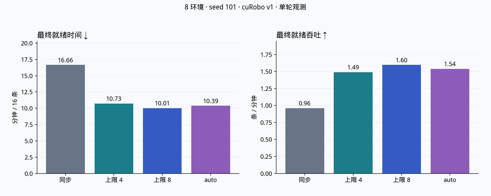
怎么做的
对历史 v1 四组使用相同的 16 条保存目标，读取从首条开始到最终输出就绪的时间，再换算为每分钟保存条数。同步组为基线，cap4、cap8 和 auto 均走异步保存。
这样做的意义
这是用户实际等待结果的指标，包含后台排空和合并，能够检验生成阶段省下的时间是否在收尾阶段又被消耗掉。
当前结论
这轮 8 环境实验中，异步组最终吞吐相对同步提高约 55%–66%，auto 提高约 60.2%。结果支持保存改造有效；各配置只有一轮且实际均为 4 writer，不能据此确定长期最优上限。
读图与术语
耗时减少比例与吞吐提高比例不同：相同产出下，吞吐与时间成反比，不要把两种百分比混用。
阅读顺序 09 / 39 · v015 原第 16 页变快之后，数据仍然合格吗

怎么做的
分别统计任务尝试结果、实际保存条数、HDF5 结构回读和严格末态检查。历史 v1 各组 17 个已完成 episode 中有 1 次生成失败，最终保存 16 条；16 条保存数据均通过末态检查。
这样做的意义
只有速度而没有质量约束，可能把提前结束或错误状态计为优化收益。将生成成功和保存后质量分开，才能判断获得的是否是可用训练数据。
当前结论
本轮 v1 各组保存数据均为 16/16 合格，支持观察到的效率收益没有伴随这些检查项退化。样本较小，不能推断所有场景的长期成功率；取消任务也需独立统计。
读图与术语
生成失败计入已完成尝试，但通常不进入成功保存集合；严格末态检查验证最终物理状态，文件结构检查验证数据格式。
阅读顺序 10 / 39 · v015 原第 17 页为什么生成完成后还要继续等待

怎么做的
将整批时间分为最后一个已完成 episode 结束之前的生成窗口，以及其后到 output_ready 的尾段。尾段由剩余后台保存、分片合并和文件关闭等工作构成。
这样做的意义
异步保存将工作挪到后台，可以缩短生成阻塞，却可能留下更多收尾工作。观察尾段才能判断端到端收益，避免仅用“最后一条轨迹生成完”作为终点。
当前结论
历史 auto 本轮尾段约 74.48 秒，说明收尾值得继续拆分。它仍在最终吞吐上优于同步；一次较长尾段并不能证明 auto 策略必然导致较差收尾。
读图与术语
尾段按整批独占的墙钟区间计算；后台写入在生成窗口内已经进行的部分，不应再次全部相加。
阅读顺序 11 / 39 · v015 原第 18 页episode 阶段均值为什么会下降

怎么做的
从历史已完成 episode 日志中分别取规划、execute、导出或入队等阶段，计算每组均值；v1 各组统计 17 个完成尝试，包括一次失败。异步入队与同步完整导出的工作范围在图中分别标注。
这样做的意义
整批收益需要用阶段变化解释。保存工作占用主控制流时，其他环境可能仍处于 execute 等待中；移走保存工作既能改变导出阶段，也可能缩短观察到的执行等待。
当前结论
同步导出均值约 25.6 秒，auto 入队约 2.6 秒，但后者还不包含后台写入完成。execute 均值的下降支持主循环受阻减少的解释；内部具体归因由第 29–32 页的插桩配对补充。
读图与术语
阶段均值用于比较同类区间；多个环境会重叠，不能将这些条形累计成整批最终时间。
阅读顺序 12 / 39 · v015 原第 19 页execute 计时到底覆盖什么
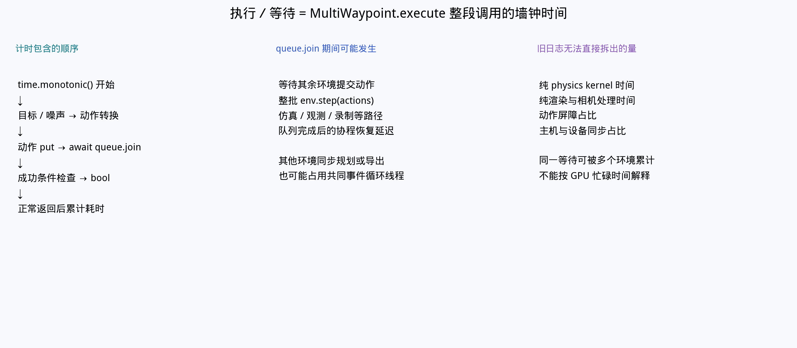
怎么做的
历史计时器包住整个 await execute 调用：准备或提交动作后，等待动作队列的完成条件。此时主循环可能在推进其他环境、调用物理、更新观测，甚至执行同步导出。
这样做的意义
先理解计时边界，才能回答“执行等待的大部分在做什么”。函数名中的 execute 不是单一物理内核，await 的经过时间也不是该协程独占 CPU 或 GPU 的时间。
当前结论
历史 execute 指标适合观察调用链延迟，却不能直接分解成 GPU 物理、渲染与空闲比例。新增插桩将主线程区间按实际操作归类，补上内部证据；queue.join 与内部工作不能重复相加。
读图与术语
await 表示当前协程可以挂起并交还调度权；等待期间其他任务可以继续工作。
阅读顺序 13 / 39 · v015 原第 20 页是否通过少执行动作获得了加速

怎么做的
比较各组 execute 调用次数与累计耗时，再计算每次调用的平均经过时间。历史 v1 四组均有 23,476 次调用，并按各自已完成 episode 数量提供归一化对照。
这样做的意义
单看执行总时长下降，可能误以为机器人少走了步骤。调用次数提供工作量参照，有助于区分相同调用数量下延迟降低与执行数量减少。
当前结论
历史 v1 四组调用数相同，观察到的时间差主要体现为单次调用经过时间变化。相同次数仍不能证明轨迹、图像和物理末态完全一致；新增配对进一步验证了完整动作数组与末态。
读图与术语
v1 的 17 个完成尝试与 v2 的 16 个完成尝试统计范围不同；跨版本比较应同时读取分母和质量结果。
阅读顺序 14 / 39 · v015 原第 21 页收益主要体现在典型调用还是慢窗口

怎么做的
将连续 100 次 execute 调用组成窗口，计算每个完整窗口的平均延迟，再比较中位数和 P95。v1 每组有 225 个完整窗口，v2 有 216 个；不满窗口的尾部不混入同一口径。
这样做的意义
平均值会掩盖偶发阻塞。窗口分布可以观察生成是否经常被保存等慢操作拖住，并帮助判断优化改善的是稳定工作节奏还是极少数尖峰。
当前结论
历史 v1 的典型窗口均值约 108–114 毫秒；同步的慢窗口 P95 约 944 毫秒，auto 约 187 毫秒。差异提示异步保存主要缓解了较长停顿，但具体原因仍需内部计时对应。
读图与术语
这里 P95 是“100 次调用平均延迟”的第 95 百分位，不是单次动作延迟的 P95，也不表示整批 95% 时间。
阅读顺序 15 / 39 · v015 原第 22 页未归类时间能否直接叫作渲染耗时
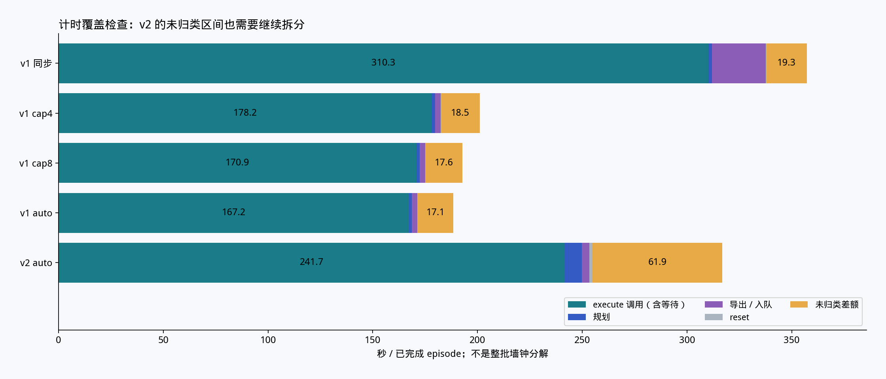
怎么做的
用每个 episode 总时长减去已记录阶段，核对计时覆盖范围，并将非负剩余单列为未归类差额。保持原始阶段数据不变，避免为了补齐总数而人为指定差额来源。
这样做的意义
计时覆盖检查可以发现遗漏环节，但只有差额大小还不能判断它属于 CPU、GPU、渲染、调度或其他等待。先把未知部分显示出来，才能决定下一轮需要加在哪里计时。
当前结论
历史 v2 约有 61.86 秒/episode 未归类，说明原计时不足以解释全部经过时间。新增 v1 插桩揭示了 v1 内部构成，却不能直接替历史 v2 差额命名；v2 仍需独立插桩。
读图与术语
图中 execute 已含等待；阶段覆盖率反映计时边界，并不是资源利用率。
阅读顺序 16 / 39 · v015 原第 23 页异步保存仍然付出了哪些成本
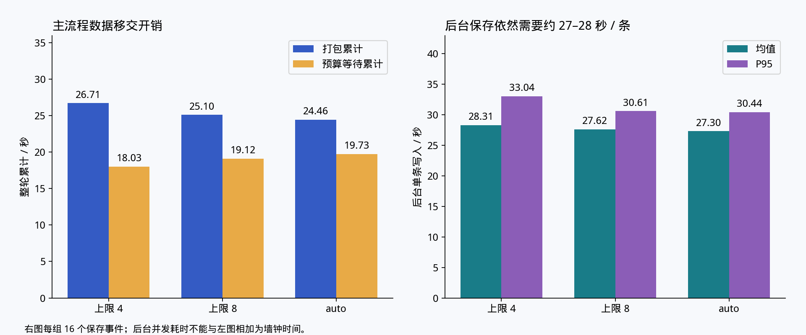
怎么做的
分别记录生产者打包、提交及预算等待，与 writer 后台压缩写入的耗时。前者发生在生成侧，后者可能由多个进程同时执行，也可能与后续轨迹生成重叠。
这样做的意义
异步不是把保存工作删掉，而是改变它发生的位置和时机。拆开这些成本，才能判断继续优化应面向主流程打包、积压控制，还是后台压缩与存储。
当前结论
历史后台单任务写入仍约 27–28 秒；生成侧提交变短可以与此同时成立。两侧累计时长不能直接相加成最终墙钟时间，预算等待也说明保存能力和内存容量仍会约束生成。
读图与术语
背压指下游处理不及时时，预算或队列限制让上游暂停；这是限制积压的机制，不等于写入失败。
阅读顺序 17 / 39 · v015 原第 24 页把收尾拆成排空与合并

怎么做的
在最后一个已完成 episode 之后，继续记录剩余保存任务排空、HDF5 分片合并及关闭的时刻。通过这些整批边界区分“还在写”与“已经写完但最终文件尚未合成”。
这样做的意义
不同尾段原因需要不同优化：写入积压应检查保存能力和调度，合并较慢应检查数据复制与文件布局。只增加 writer 未必能缩短合并阶段。
当前结论
历史 auto 的较长尾段需要结合本轮积压与合并记录解释。当前能确认最终就绪必须包含这些工作，但尚未通过重复试验确认其稳定来源，不能据一次尾段给配置定性。
读图与术语
drain 指等待在途保存任务全部完成；merge 指将各 writer 的分片整理成最终输出。
阅读顺序 18 / 39 · v015 原第 25 页GPU 利用率能解释什么

怎么做的
读取整轮资源采样中的设备 GPU utilization，按同一运行窗口汇总。历史 v1 同步、cap4、cap8、auto 的均值分别约为 22.7%、40.8%、35.6%、32.8%，并结合最终吞吐比较。
这样做的意义
GPU 利用率能提示设备获得工作的持续程度，但整轮还包含规划前处理、录制、保存和收尾。它适合发现供给不连续的线索，不能单独回答哪一个内核最慢。
当前结论
异步组平均 GPU 利用率高于同步，和生成受阻减少的机制一致；均值最高的配置却未必最终吞吐最高。当前指标不提供 SM 占用率、物理与渲染重叠，或纯 GPU 计算耗时。
读图与术语
设备利用率是采样窗口内 GPU 活动指标；SM 占用率是另一类内核执行指标，两者不能互换。
阅读顺序 19 / 39 · v015 原第 26 页GPU 为什么可能等主线程提供下一批工作

怎么做的
沿代码整理闭环：环境任务准备动作，主循环凑齐后批量步进，再更新观测，随后准备下一批动作。主机上的同步规划调用、状态读取、图像复制和保存打包都可能出现在闭环中。
这样做的意义
即使数值计算在 GPU 上并行，下一批输入仍需由主机组织。如果控制流停在 CPU 工作或同步读取上，设备可能得不到连续任务，因此加速不只取决于增加 GPU 算力。
当前结论
异步 writer 移走了闭环中的部分保存工作；相机位姿刷新、物理推进和渲染读取仍留在生成路径。该图说明依赖关系，实际空闲区间和引擎重叠需要 CPU/CUDA/图形时间线测量。
读图与术语
主线程是组织仿真与录制的 CPU 执行线程；同一线程中的同步工作会影响后续 GPU 工作的提交时刻。
阅读顺序 20 / 39 · v015 原第 27 页一个控制步为什么出现多次相机操作

怎么做的
源码路径显示普通批量控制步有两次 observation.compute，每次访问三个相机观测项；每项位姿更新又遍历三台相机。新增配对计数核对到每步约 6 次整组位姿刷新、18 次 set_world_poses、6 次 RGB CPU 复制，实际渲染约 3 次。
这样做的意义
相机相关调用并非一一对应真正渲染。区分位姿提交、图像复制和实际渲染，可以优先查找重复主机工作，避免把所有相机调用都当作 GPU 渲染。
当前结论
计数支持检查同状态下的位姿与副本复用；是否能安全复用还要验证 reset、事件、相机变化及观测历史。不能直接删除第二次 observation.compute，也不能把计数减少预先当作等比例加速。
读图与术语
普通步的计数不含额外 reset 开销；“刷新整组相机”与“更新一台相机位姿”是不同计数单位。
阅读顺序 21 / 39 · v015 原第 28 页如何把代码推测变成运行证据

怎么做的
先核对实际加载文件和代码哈希，确认运行路径；再记录调用次数与主机耗时，定位重复工作；随后使用关联 CPU、CUDA 和图形事件的性能追踪，最后通过只改变一个因素的实验验证收益。
这样做的意义
源码说明可能执行什么，计数说明这次执行了多少，时间线说明在哪里等待，消融实验说明改动是否真正改善结果。把这几层串起来，可以减少依据函数名猜测瓶颈。
当前结论
目前已取得冻结代码、真实配对、调用计数及主线程内部归类；尚未取得证明 GPU 引擎实际重叠的追踪。下一步优先验证相机复用，再针对渲染与物理做设备追踪。
读图与术语
消融实验指每次只打开一个改动，并与相同基线比较；性能追踪本身有开销，应与正式吞吐测量分开运行。
阅读顺序 22 / 39 · v015 原第 29 页新增配对如何保证比较公平

怎么做的
正式配对固定 v1、4 环境、seed 101、8 条保存目标和 60 步末态保持，仅对比原同步保存与改进 auto。两组冻结输入和代码来源，并回读文件，按完整动作数组匹配 8 条数据，同时检查结构及严格末态。
这样做的意义
内部计时需要有可解释的工作量。动作完全匹配、步数一致和质量通过，能排除少执行任务或提前结束等原因；独立保存这组结果，也避免与历史 8 环境数据混用。
当前结论
两组均 8/8 合格，最终就绪由 515.77 秒降至 350.30 秒，吞吐提高 47.2%。8 环境预试曾因内存不足终止，未进入正式结论；本页仅代表这组完成的 4 环境配对。
读图与术语
完整动作按集合匹配允许异步完成顺序变化；这不等于声明所有渲染像素逐位一致，图像复用仍需另做验证。
阅读顺序 23 / 39 · v015 原第 30 页执行内部的大部分时间花在哪里
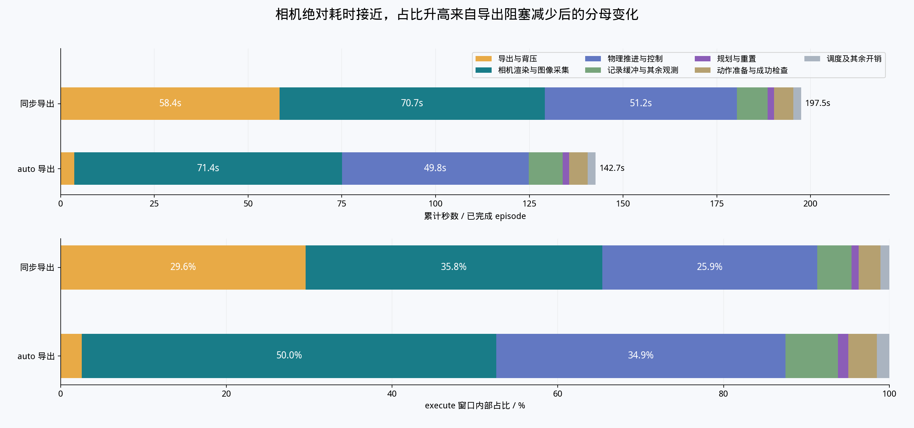
怎么做的
用主线程互斥计时区间归类物理、控制、相机、录制和保存工作，再按 episode 的 execute 窗口汇总。每组内部占比的分母都是该组 execute 均值；queue.join 另作为逻辑等待统计，不再次叠加。
这样做的意义
互斥归类避免嵌套函数重复计时，也能把“协程在等”转换成“主线程当时在做什么”。比较绝对秒数与百分比，可以区分真正加速和分母缩小造成的占比变化。
当前结论
execute 均值由 197.53 降至 142.71 秒；保存及背压由 58.41 降至 3.64 秒，解释了几乎全部净下降。相机由 70.72 到 71.41 秒，占比却由 35.80% 升至 50.04%，主要因为保存阻塞减少。
读图与术语
改进后相机约占一半，物理与控制约占 34.90%。这些是主机调用区间归类，不是 GPU 各引擎利用率。
阅读顺序 24 / 39 · v015 原第 31 页物理、控制和相机分别在做什么
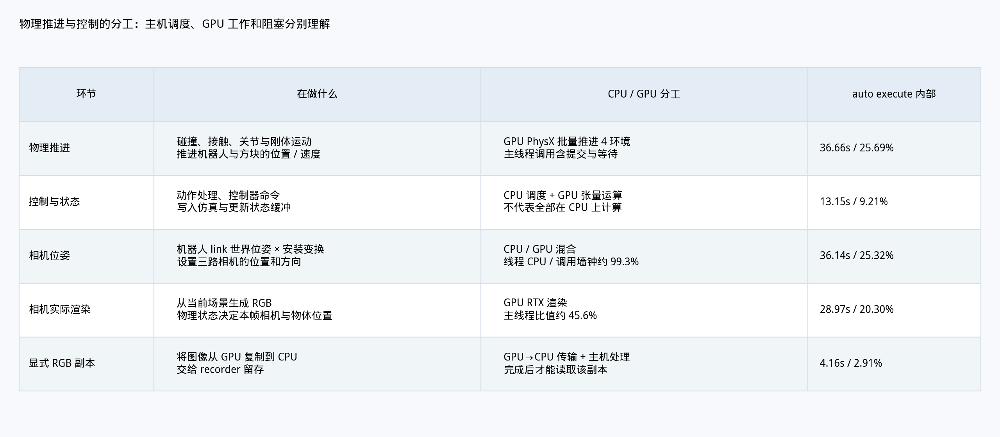
怎么做的
物理推进调用 GPU PhysX 更新关节与刚体运动、接触和约束；控制路径组织目标与动作、写入仿真并读取状态。相机路径刷新位姿、调用 RTX 渲染，再将 RGB 图像复制到 CPU 供录制。计时同时对照主线程 CPU 时间。
这样做的意义
一个 API 区间可以同时包含 CPU 提交、设备计算和同步等待。把功能与执行位置讲清，才能决定优化主机调用、重复读取，还是 GPU 内核；不能将整个物理区间都叫作纯 GPU 时间。
当前结论
改进后每 episode 物理 API 约 36.66 秒、控制等约 13.15 秒；位姿刷新 36.14 秒、渲染 API 28.97 秒、RGB 复制 4.16 秒。位姿区间主线程 CPU 时间约占 99.28%，应优先检查主机侧重复刷新。
读图与术语
物理与渲染区间 CPU 时间占比分别约 22.87%、45.58%；其余经过时间可能包含设备或其他等待，不能全部等同于 GPU 计算。
阅读顺序 25 / 39 · v015 原第 32 页在 GPU 上并行，为什么仍要按步骤等待

怎么做的
4 个环境由一次批量控制步共同推进；配置为 120 Hz 物理、4 次子步，对应 30 Hz 控制。正式运行计数为 2,778 次批量步进、11,112 次物理子步；普通步之后还有位姿、渲染和图像读取。
这样做的意义
环境之间可以数据并行，同一帧内部却有依赖：先得到新物理状态，才能正确更新相机并采集对应图像。GPU 并行并不取消这些因果顺序，CPU 也要组织和读取结果。
当前结论
当前代码和计数确认了批量物理与相机路径，但示意箭头不是设备追踪。是否能跨帧流水化、物理与渲染是否存在可利用的重叠，仍需验证数据对应关系及真实时间线。
读图与术语
物理子步比控制步更细；一条控制动作保持 4 个物理子步。改变子步数量会改变仿真协议，不能直接作为同条件加速。
阅读顺序 26 / 39 · v015 原第 33 页优先尝试复用哪些相机工作
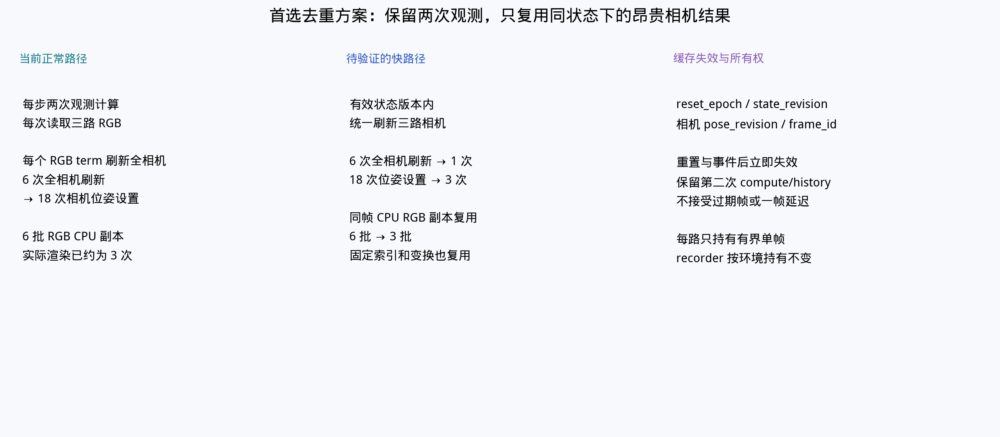
怎么做的
候选方案一是在同一物理状态下，将 6 次整组相机位姿刷新合并为一次；方案二让同状态 RGB 的 CPU 副本供两次观测读取复用，使普通步复制由 6 次降为 3 次。保留两次观测计算及历史更新语义。
这样做的意义
这两项针对已观测的重复主机工作，有机会减少开销而保持动作、帧率和分辨率。缓存必须绑定物理状态、reset、事件与相机状态，状态变化后立即失效。
当前结论
目前这是待实施、待消融的方案。应先做位姿去重，再单独测 RGB 复用和组合；只有逐帧对应、历史缓冲、末态与内存检查通过，才可将复用视为保持任务语义的优化。
读图与术语
缓存副本需保证读取期间不被后续帧覆盖，缓冲数量有界；仅按控制步编号判断相同状态可能漏掉 reset 或相机变化。
阅读顺序 27 / 39 · v015 原第 34 页依据耗时和风险安排优化顺序
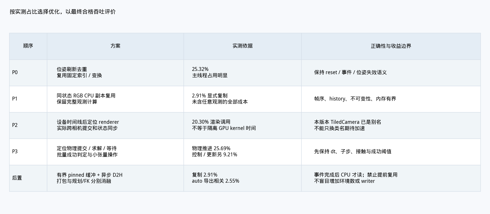
怎么做的
以改进后 execute 构成为基准，先检查占 25.32% 的位姿刷新与占 2.91% 的 RGB 复制；再追踪占 20.30% 的渲染 API、占 25.69% 的物理 API，以及约 9.21% 的控制与状态路径。
这样做的意义
优先级同时取决于占比、可消除的重复量和正确性风险。主机位姿去重有明确重复计数；渲染和物理虽大，却需要设备追踪确认真正瓶颈，不能简单按 API 名称估计收益。
当前结论
先进行相机复用消融，再决定是否投入渲染或物理优化。当前本地 TiledCamera 是 Camera 的弃用别名，仅换类名不会增加新的批量能力；分辨率、采样频率、物理步长和成功阈值变化应另设质量实验。
读图与术语
优先级不是收益承诺。异步 GPU→CPU 复制还需要完成同步与缓冲生命周期保证，当前复制占比较小，应排在位姿去重之后。
阅读顺序 28 / 39 · v015 原第 35 页如何估计方案的条件收益

怎么做的
从改进后 execute 均值 142.706 秒出发，假设其余成本不变，按候选部分的可减少比例做算术扣减。例如位姿刷新耗时 36.136 秒，若 6 次降为 1 次且成本线性，则减少其中 5/6。
这样做的意义
条件估算用于判断实验是否值得做，也暴露收益依赖哪些假设。它不是预测器：调用合并可能存在固定开销，缓存会增加管理成本，最终排空和合并也未必同步缩短。
当前结论
该假设下，位姿去重使 execute 降至约 112.59 秒，减少 21.1%；再将 RGB 复制减半，降至约 110.51 秒，减少 22.6%。这些均未实测，不能换写成最终吞吐提高 21.1% 或 22.6%。
读图与术语
读图先看假设，再看扣减量。百分比的分母是 execute 均值，整批 output_ready 还有不同范围的工作与重叠。
阅读顺序 29 / 39 · v015 原第 36 页下一轮怎样验证相机方案

怎么做的
设置 A0 现有 auto、A1 仅位姿去重、A2 仅 RGB 副本复用、A3 两项组合。固定 4 环境、8 条目标、seed 101 及原任务配置，计划至少 3 组配对并交替运行顺序；正式计时与性能追踪分开。
这样做的意义
单独打开每个改动，可以判断收益来自哪一部分，以及组合后是否互相影响。交替和重复能减轻缓存、系统负载与运行顺序对结果的影响。
当前结论
这是后续实验协议，尚无 A1–A3 实测结果。验收需同时满足动作与步数匹配、严格末态和文件结构通过、逐帧图像及观测历史正确、reset 后缓存失效、内存有界，并比较最终就绪时间。
读图与术语
任何一项语义或质量检查失败，都需要修正方案后重跑；不能仅凭某个 API 计时下降宣布生产加速。
阅读顺序 30 / 39 · v015 原第 37 页哪些是观测，哪些是机制解释
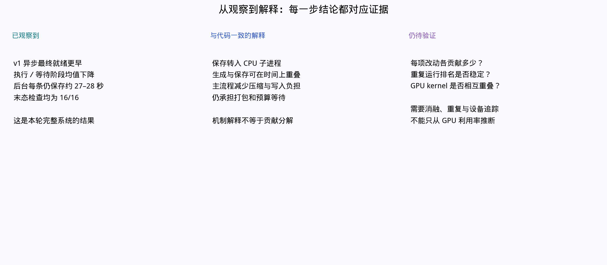
怎么做的
把证据分成三层：运行日志给出时间与质量结果；冻结源码和新增计数说明调用路径；独立消融用来验证单项改动的因果贡献。每项结论对应到它实际拥有的证据层。
这样做的意义
总时间下降能证明这次组合改造有效，却不能自动给每个代码改动分配收益。区分观测与解释，可以让后续方案直接针对尚未确认的环节设计实验。
当前结论
v1 异步保存收益已有历史主实验和新增配对支持；内部归类显示保存阻塞下降是主要变化。相机去重、RGB 复用以及各项内存改动的独立贡献仍待消融，GPU 引擎重叠仍待追踪。
读图与术语
“与某机制一致”表示现象支持该解释；“独立贡献已验证”还要求只改变该因素的对照结果。
阅读顺序 31 / 39 · 精简机制说明v2 迁移：把新规划结果转换回任务需要的格式
适配器的责任是保持上层任务可用，同时处理新旧库的数据契约差异。
输入｜机器人模型、场景与目标
MotionGenConfig → MotionPlannerCfg；ee_link → tool_frames，retract_config → default_joint_position。目标和动态物体先转换到机器人基座系，再构造按工具坐标系命名的 GoalToolPose。
求解｜替换调用，重新处理成功语义
v1 plan_single → v2 plan_pose。适配器检查结果存在及 success，再读取 get_interpolated_plan()；B-spline 控制点不能直接当成执行采样。部分规划选项没有建立一对一映射。
输出｜轨迹 → 关节重排 → FK → 世界坐标位姿
按关节名称整理插值轨迹，通过正向运动学（FK）读取目标工具的末端位姿，再变回世界坐标系，供原任务执行。持物附着、临时碰撞设置及恢复也需要适配。
迁移边界｜接口跑通与任务收益分别验证
当前仍是逐环境规划调用，未改成跨环境批量规划；未据此验证全身、力矩约束或深度融合能力。适配代码含固定版本私有接口依赖。实验页保留跨日期单轮和末态 15/16 的限制。
依据：interface-evidence.md：冻结 v2 适配器及当前 v1 调用摘录阅读顺序 32 / 39 · v015 原第 41 页v2 重跑采用怎样的验收流程

怎么做的
次日 v2 使用冻结启动器、8 环境、seed 101、16 条保存目标，沿用异步 auto 保存和原成功阈值。整轮结束后回读 HDF5，检查结构，并用严格物理末态验证器独立检查每条保存数据。
这样做的意义
运行完成只表示程序走到结束；独立回读和末态检查才能确认输出可用。保留原阈值也避免通过放宽成功条件让新后端看起来更快或更成功。
当前结论
该协议给出了 v2 的完整运行证据，但与历史 v1 测试不在同一天，也只有一轮。结果适合描述这次接入状态；建立稳定性能差异需要同条件、交替重复的配对实验。
读图与术语
文件结构检查关注字段、形状和条数；严格末态检查关注最后的物理状态，两种通过条件缺一不可。
阅读顺序 33 / 39 · v015 原第 42 页16 条保存完成为何仍有质量问题
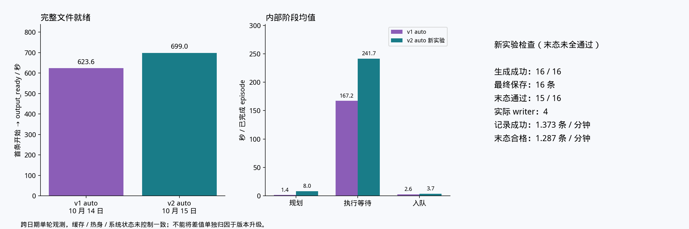
怎么做的
分别报告最终输出时间、保存条数和严格末态通过数。v2 整批最终就绪约 699.05 秒，16 条均保存并可回读，但其中 demo2 未通过严格末态检查，合格数为 15 条。
这样做的意义
任务内部成功信号与保存后的严格物理检查可能不同。把这两个结果并列，才能避免用“保存 16 条”代表“16 条全部合格”，也为失败轨迹复查提供明确对象。
当前结论
本次 v2 集成运行完成，严格末态为 15/16。记录成功吞吐使用 16 作分子，末态合格吞吐应使用 15；现有结果不支持宣称 v2 在该任务上优于 v1。
读图与术语
未通过项 demo_2 的末态角速度为 0.8538 rad/s，超过 0.5 rad/s 阈值；位置与线速度合格不能替代角速度条件。应复查保持阶段和适配参数，再重复验证。
阅读顺序 34 / 39 · v015 原第 43 页把版本改动与完整结果放在一起看

怎么做的
并列历史 v1 同步、v1 auto 与次日 v2 auto 的最终就绪时间、记录成功吞吐和严格末态结果。各组保存目标均为 16 条，但版本、日期和质量通过数在图中分别标注。
这样做的意义
实现变化需要落到结果上检验。时间、产出和质量同时展示，可以防止只选取最有利的某一个数字，也能明确哪个比较支持保存优化、哪个比较仍受实验条件限制。
当前结论
历史 v1 auto 相对同步耗时减少约 37.6%、吞吐提高约 60.2%，两者保存数据均 16/16 合格。v2 为 15/16 合格，且跨日期单轮，当前没有确立规划迁移的性能优势。
读图与术语
新增 4 环境配对的吞吐收益为 47.2%，来自另一组规模和计时条件；它补充证据，不替换本页历史数字。
阅读顺序 35 / 39 · v015 原第 44 页哪些结论可以用于当前决策
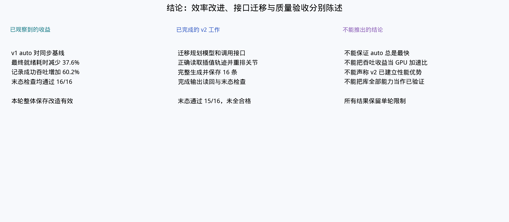
怎么做的
综合历史 8 环境生产对照、新增 4 环境内部计时、文件质量检查和 v2 重跑，将结果按已验证、可解释、待实验三个范围整理。对不同规模的数据分别保留其分母和条件。
这样做的意义
研究结论应能指导下一步投入：已经证明有效的路径可以保留，内部热点决定优化顺序，尚未验证的方案则需要明确的实验门槛。
当前结论
当前支持保留 v1 异步保存；其主要实测变化是减少生成路径中的保存及背压。改进后应优先验证相机位姿去重与同状态副本复用。v2 可继续用于迁移研究，暂不作为已证明更优的生产替代。
读图与术语
相机方案的 21.1%/22.6% 是 execute 条件估算，尚无优化实测；实际决策以完整输出、质量与内存结果为准。
阅读顺序 36 / 39 · v015 原第 45 页下一轮需要回答哪些问题

怎么做的
保存侧通过同日交替重复确认收益稳定性，并分开测试 writer 和内存改动；生成侧执行相机 A0–A3 消融，采集内部计时；v2 复查失败末态并安排同协议对照，设备追踪另行诊断。
这样做的意义
这些实验分别消除配置排名不稳定、组合改动难归因、相机复用未验证和 v2 质量边界等不确定性。按问题分开设计，比同时更换多项参数更容易得出可行动的结论。
当前结论
优先完成保持任务语义的相机去重，再考虑渲染与物理深度优化。每次正式比较都应报告最终就绪、合格吞吐、质量通过数及内存峰值；当前没有下一轮的新增性能结果。
读图与术语
同日运行也可能受系统负载影响，所以仍需交替和重复。不能将带追踪开销的运行直接与无追踪基线比较。
阅读顺序 37 / 39 · v015 原第 49 页阶段分解应怎样阅读

怎么做的
对历史 v1 各组 17 个完成 episode 的已记录阶段求均值，分别展示规划、执行等待、导出或入队等组成，其中包含一次生成失败。异步后台写入另列，不塞进提交阶段。
这样做的意义
阶段分解便于定位函数级变化，说明最终时间差可能从哪里产生；同时保留失败尝试，可以反映本轮实际完成任务的统计范围。
当前结论
这些均值显示同步与异步路径的阶段差异，但既不是 16 条成功数据的专属平均，也不是整批墙钟的可加分项。内部操作占比应看新增配对页，历史未记录的细节不能从本图倒推。
读图与术语
按完成 episode 计均值与按成功保存数算吞吐使用不同分母，两者回答的问题不同。
阅读顺序 38 / 39 · v015 原第 50 页旧生产实验和离线实验分别回答什么

怎么做的
将历史 24 episode 的生产比较，与 4 episode 的离线导出测试分开列出。旧生产各组均记录成功 24 条、严格末态通过 23 条；离线测试只用已有 4 条数据测保存路径，不进行持续生成。
这样做的意义
离线实验便于控制输入、快速筛选存储方案，生产实验则检验生成与保存争用、重叠和收尾。两者有互补价值，但时间范围和工作量不同。
当前结论
旧生产实验曾观察到双 writer 最终吞吐提高约 29.8%；该数字只对应当时协议。它与当前 8 环境四配置、4 环境内部配对属于不同实验，不能合并求平均或互相替代。
读图与术语
离线保存变快不保证生产同比例变快：保存可能已被生成掩盖，也可能通过资源争用影响生成。
阅读顺序 39 / 39 · v015 原第 51 页压缩策略如何权衡速度与存储

怎么做的
使用固定输入的离线图像数据，每台相机 1,342 帧 RGB，保持分块方式一致，对照不压缩、LZF 和 gzip level 2 的写入时间与文件大小。比较范围限于本批图像和保存配置。
这样做的意义
压缩用 CPU 时间换取更少磁盘空间与写入字节。存储速度、CPU 余量和数据内容会改变权衡，离线对照可帮助选出值得放入生产实验的候选配置。
当前结论
本批固定输入中，不压缩保存更快但文件更大，LZF 提供另一种速度与体积取舍。该结果不能直接推算生成吞吐；生产选择还需核对 CPU 与磁盘争用、收尾时间、读回正确性及存储预算。
读图与术语
gzip level 2 表示压缩等级；LZF 是另一种压缩算法；chunk 是 HDF5 存储分块，改变它也可能影响性能。